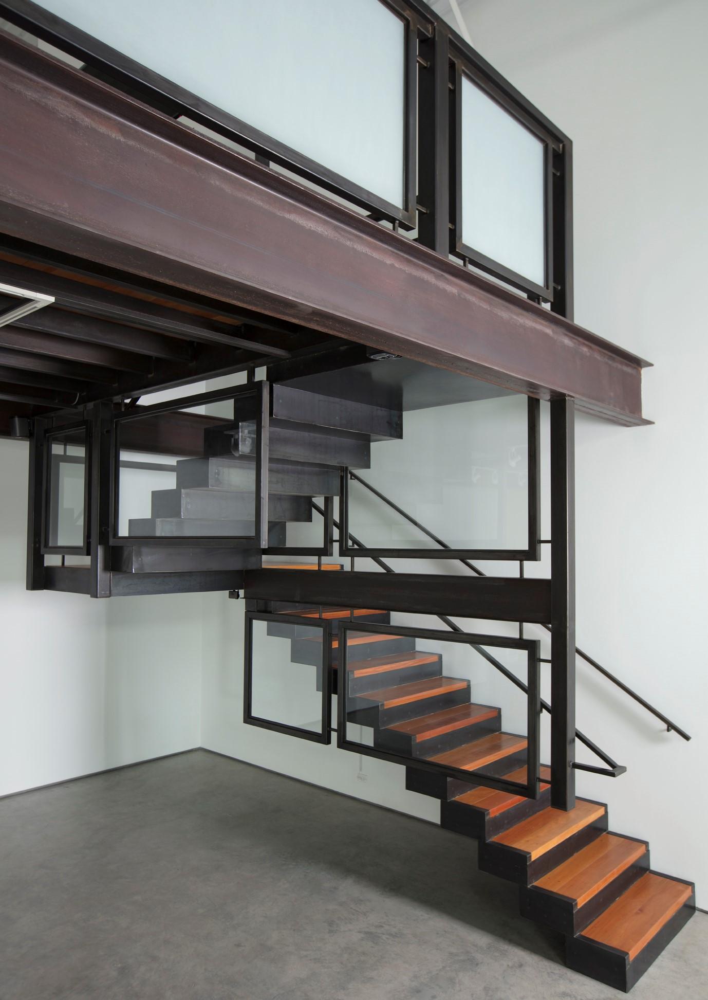
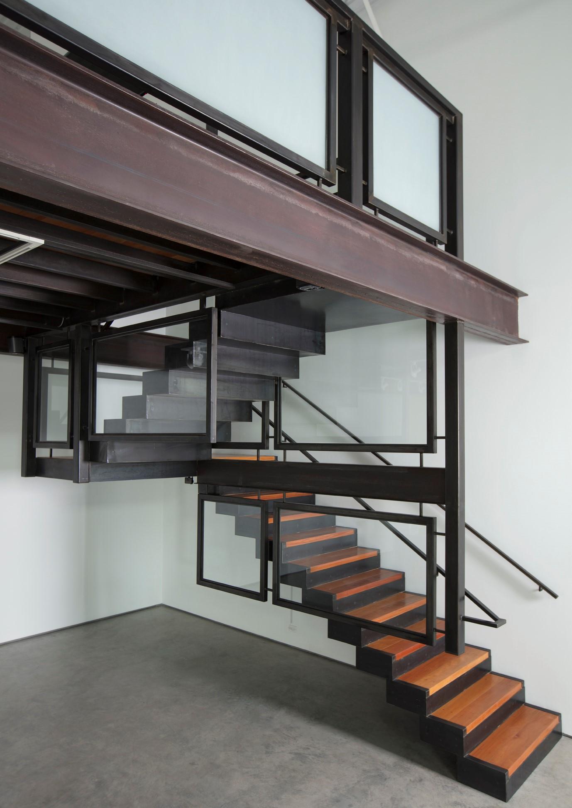

Rippel Metal is a retail store showcasing custom architectural detail and contemporary home furnishings. You can purchase items in our showroom, order from catalogs, or have us craft custom furniture by local artists.
Rippel Metal’s modern, contemporary designs may seem contradictory, given that Santa Fe is the oldest capital city in the United States. Yet, mixed in with the more traditional Santa Fe designs, you will see many examples of contemporary work in architecture, art and furniture. Rippel Metal is a retail store that caters to people with a more contemporary aesthetic. We carry furniture, lighting, tableware, art and other home furnishings. Additionally, we locally build custom furniture, staircases and architectural detail elements. We offer high quality items that gravitate towards clean, simple, and minimal lines.

 



"simple is good."- Jim Henson